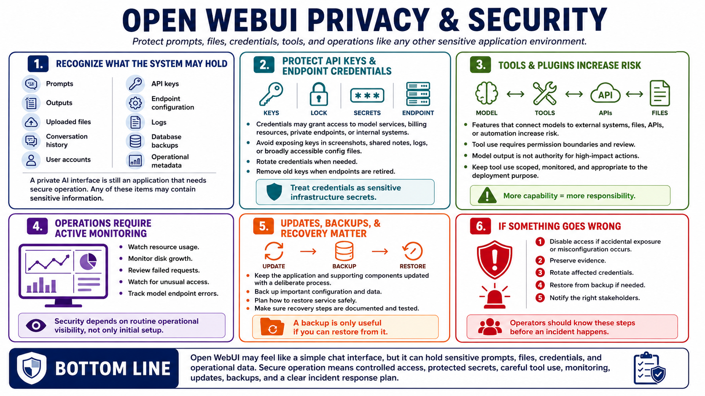

Privacy, Security, and Operations
Connecting to LMS... Progress: in progress

Narration
Privacy and security in Open WebUI begin with recognizing what the system may hold: prompts, outputs, uploaded files, conversation history, user accounts, API keys, endpoint configuration, logs, database backups, and operational metadata. Any of these may contain sensitive information. A private AI interface is still an application that needs secure operation.
API keys and endpoint credentials should be protected because they may allow access to model services, billing resources, private endpoints, or internal systems. Avoid exposing credentials in screenshots, shared notes, logs, or configuration files with broad access. Rotate credentials when needed and remove old keys when endpoints are retired.
Plugin and tool features should be approached carefully at a high level. Anything that lets a model interact with external systems, files, APIs, or automation increases the need for permission boundaries and review. Model output should not be treated as authority to perform high-impact actions. Keep tool use scoped, monitored, and appropriate to the deployment's purpose.
Operations include updates, monitoring, backups, and incident response. Watch resource usage, disk growth, failed requests, unusual access, and model endpoint errors. Keep the application and supporting components updated with a deliberate process. If accidental exposure or misconfiguration occurs, operators should know how to disable access, preserve evidence, rotate credentials, restore from backup, and notify the right stakeholders.